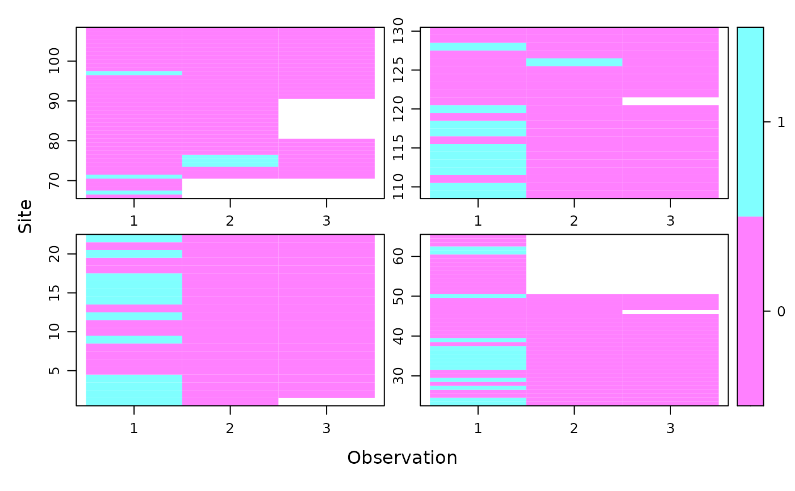

occu.RdThis function fits the single season occupancy model of MacKenzie et al (2002).
occu(formula, data, knownOcc=numeric(0), linkPsi=c("logit", "cloglog"), starts, method="BFGS", se=TRUE, engine=c("C", "R", "TMB"), threads = 1, ...)
| formula | Double right-hand side formula describing covariates of detection and occupancy in that order. |
|---|---|
| data | An |
| knownOcc | Vector of sites that are known to be occupied. These should be supplied as row numbers of the y matrix, eg, c(3,8) if sites 3 and 8 were known to be occupied a priori. |
| linkPsi | Link function for the occupancy model. Options are
|
| starts | Vector of parameter starting values. |
| method | Optimization method used by |
| se | Logical specifying whether or not to compute standard errors. |
| engine | Code to use for optimization. Either "C" for fast C++ code, "R" for native R code, or "TMB" for Template Model Builder. "TMB" is used automatically if your formula contains random effects. |
| threads | Set the number of threads to use for optimization in C++, if
OpenMP is available on your system. Increasing the number of threads
may speed up optimization in some cases by running the likelihood
calculation in parallel. If |
| ... | Additional arguments to optim, such as lower and upper bounds |
See unmarkedFrame and unmarkedFrameOccu for a
description of how to supply data to the data argument.
occu fits the standard occupancy model based on zero-inflated
binomial models (MacKenzie et al. 2006, Royle and Dorazio
2008). The occupancy state process (\(z_i\)) of site \(i\) is
modeled as
$$z_i \sim Bernoulli(\psi_i)$$
The observation process is modeled as
$$y_{ij}|z_i \sim Bernoulli(z_i p_{ij})$$
By default, covariates of \(\psi_i\) and \(p_{ij}\) are modeled
using the logit link according to the formula argument. The formula is a double right-hand sided formula
like ~ detform ~ occform where detform is a formula for the detection process and occform is a
formula for the partially observed occupancy state. See formula for details on constructing model formulae
in R.
When linkPsi = "cloglog", the complimentary log-log link
function is used for \(psi\) instead of the logit link. The cloglog link
relates occupancy probability to the intensity parameter of an underlying
Poisson process (Kery and Royle 2016). Thus, if abundance at a site is
can be modeled as \(N_i ~ Poisson(\lambda_i)\), where
\(log(\lambda_i) = \alpha + \beta*x\), then presence/absence data at the
site can be modeled as \(Z_i ~ Binomial(\psi_i)\) where
\(cloglog(\psi_i) = \alpha + \beta*x\).
unmarkedFitOccu object describing the model fit.
Kery, Marc, and J. Andrew Royle. 2016. Applied Hierarchical Modeling in Ecology, Volume 1. Academic Press.
MacKenzie, D. I., J. D. Nichols, G. B. Lachman, S. Droege, J. Andrew Royle, and C. A. Langtimm. 2002. Estimating Site Occupancy Rates When Detection Probabilities Are Less Than One. Ecology 83: 2248-2255.
MacKenzie, D. I. et al. 2006. Occupancy Estimation and Modeling. Amsterdam: Academic Press.
Royle, J. A. and R. Dorazio. 2008. Hierarchical Modeling and Inference in Ecology. Academic Press.
Ian Fiske
# add some fake covariates for illustration siteCovs(pferUMF) <- data.frame(sitevar1 = rnorm(numSites(pferUMF))) # observation covariates are in site-major, observation-minor order obsCovs(pferUMF) <- data.frame(obsvar1 = rnorm(numSites(pferUMF) * obsNum(pferUMF))) (fm <- occu(~ obsvar1 ~ 1, pferUMF))#> #> Call: #> occu(formula = ~obsvar1 ~ 1, data = pferUMF) #> #> Occupancy: #> Estimate SE z P(>|z|) #> 8.05 20.4 0.394 0.694 #> #> Detection: #> Estimate SE z P(>|z|) #> (Intercept) -1.929 0.164 -11.730 8.90e-32 #> obsvar1 -0.152 0.177 -0.864 3.88e-01 #> #> AIC: 262.5825#> 0.025 0.975 #> p(Int) -2.2507318 -1.606287 #> p(obsvar1) -0.4984393 0.193446#> Profiling parameter 1 of 2 ... done. #> Profiling parameter 2 of 2 ... done.#> 0.025 0.975 #> p(Int) -2.2650988 -1.5736092 #> p(obsvar1) -0.5010324 0.1933641#> Linear combination(s) of Detection estimate(s) #> #> Estimate SE (Intercept) obsvar1 #> -2 0.194 1 0.5 #># transform this to probability (0 to 1) scale and get confidence limits (btlc <- backTransform(lc))#> Backtransformed linear combination(s) of Detection estimate(s) #> #> Estimate SE LinComb (Intercept) obsvar1 #> 0.119 0.0203 -2 1 0.5 #> #> Transformation: logistic#> 0.05 0.95 #> 0.08915656 0.1563634# Empirical Bayes estimates of proportion of sites occupied re <- ranef(fm) sum(bup(re, stat="mode"))#> [1] 130